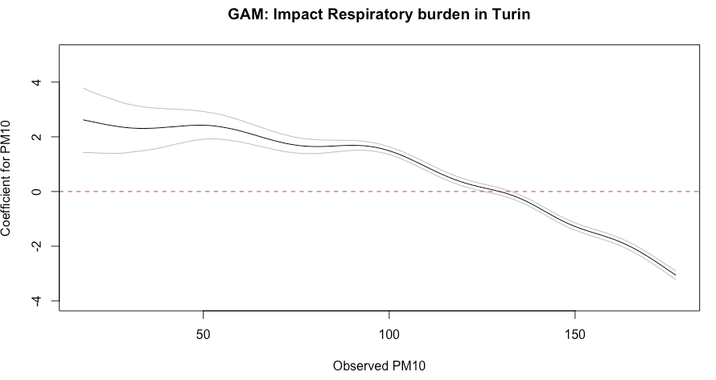
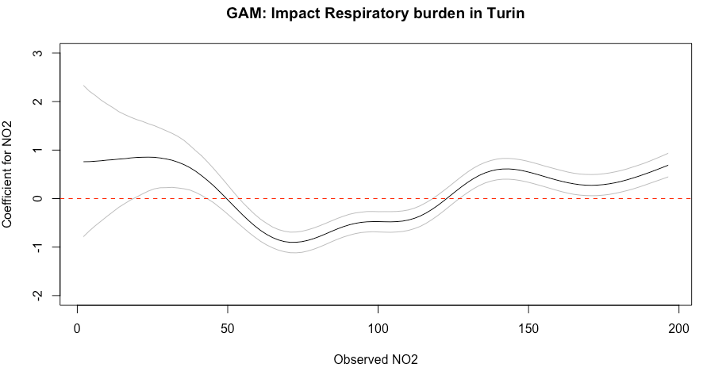

4 Bayesian Generalised Additive Models (GAMs)
4.1 Lecture recording (Length: 38:12 minutes)
Important Notes: If this or any subsequent video don’t play from this website, then try playing it directly from Microsoft Streams - you should be able to view it by clicking this [LINK]. Access to Microsoft Steams to these videos will require use of your UCL institutional login details.
4.2 Introduction
To date, we have been using various models that considers the relationship between variables to be assumed as something that’s linear. When implementing a regression of any kind, we are attempting to fit a straight line (i.e., line of best fit) to the data in order to examine and explain variations between two or more variables with some outcome with the strong assumption of linearity. The issue of linearity may not be case (which often is not the case) and hence there must be some model that can model non-linear relationships. This is where Generalised Additive Models (GAMs) come to play - this week we will learn how to use GAMs, within a Bayesian framework.
This approach is incredibly easy to perform in RStudio as there are useful packages that generates the Stan code for GAMs. Let us begin!
4.2.1 Datasets & setting up the work directory
Go to your folder GEOG0125 and create a sub folder called “Week 3” within the GEOG0125 folder. Here, we will store all our R & Stan scripts as well as datasets. Set your work directory to Week 3’s folder.
For Windows, the code for setting the work directory will be:
For MAC, the code for setting the work directory will be:
The dataset for this practical are:
Respiratory Illness in Turin Province.csv
Now, load the dataset:
It contains the information taught in today’s lecture. We will reproduce the analysis.
4.2.2 Loading and installing packages
Install the following packages for today’s practicals.
# install the following packages
install.packages("brms")
install.packages("mgcv")
install.packages("devtools")
install.packages("ggplot2")
devtools::install_github('gavinsimpson/schoenberg')Now load the installed packages including rstan:
# load up packages
library("brms")
library("mgcv")
library("ggplot2")
library("schoenberg")
library("rstan")Make sure to select the appropriate number of cores on your computer - as this will preset the number of chains for the analysis.
On my computer, it is six. Make sure to take note on what you number of cores are. Now the usual, configure Stan:
4.3 Implementing a Bayesian Generalised Additive Model
Coding a GAM model is extremely hard but lucky - we have the brms package which stands for Bayesian Regression Modelling in Stan. It has a very streamlined function brm() for executing a Bayesian model by calling Stan without the need to actually it in Stan, making it very easy.
In fact, it even helps us to determine prior distributions for the parameters we want to estimate from our GAM model. All we need is to write the formula in the get_prior():
# get prior
prior.list <- get_prior(Overall ~ s(PM10) + s(CO) + s(NO2), data = respiratory_data, family = poisson())This equation: Overall ~ s(PM10) + s(CO) + s(NO2) is our statistical model which follows a poisson() function. Notice the s() is wrapped round our independent variables. That is how we specify a smoother on an variable. In this example, we are applying smoothers to all independent variables.
We can run a GAM using the brms(). It like running the ls().
# start timer gauge how long it takes to run a GAM
ptm <- proc.time()
# run a GAM model
model.bayes.gam <- brm(bf(Overall ~ s(PM10) + s(CO) + s(NO2)),
data = respiratory_data,
family = poisson(),
prior = prior.list,
cores = 6, # replace this with number of cores on your own machine
iter = 8000,
warmup = 1000,
thin = 10,
refresh = 0,
control = list(adapt_delta = 0.99))
# Stop the clock
proc.time() - ptmIt takes approximately 9 mins to complete the computation of the sample posterior. We can visualise the results using the summary() function:
Summary Output [See slides 24]
Family: poisson
Links: mu = log
Formula: Overall ~ s(PM10) + s(CO) + s(NO2)
Data: respiratory_data (Number of observations: 315)
Draws: 4 chains, each with iter = 8000; warmup = 1000; thin = 10;
total post-warmup draws = 2800
Smooth Terms:
Estimate Est.Error l-95% CI u-95% CI Rhat Bulk_ESS Tail_ESS
sds(sPM10_1) 6.57 1.91 3.92 11.63 1.01 400 827
sds(sCO_1) 5.83 1.60 3.72 9.77 1.01 295 551
sds(sNO2_1) 6.30 1.60 4.00 10.03 1.01 430 1016
Population-Level Effects:
Estimate Est.Error l-95% CI u-95% CI Rhat Bulk_ESS Tail_ESS
Intercept 3.56 0.01 3.54 3.59 1.00 1565 2241
sPM10_1 -19.46 3.40 -26.25 -12.94 1.01 445 906
sCO_1 33.75 3.17 27.43 39.90 1.01 396 804
sNO2_1 4.35 4.96 -5.43 14.39 1.01 259 455
Draws were sampled using sampling(NUTS). For each parameter, Bulk_ESS
and Tail_ESS are effective sample size measures, and Rhat is the potential
scale reduction factor on split chains (at convergence, Rhat = 1).The result under the Smooth Terms are variance parameters, which describes the extent of “wiggliness” of the smooth — the larger the value the more wigglier the smooth, and vice versa. We can see that the credible interval doesn’t include 0 so there is evidence that a smooth is required over and above a linear. If it did exclude the null value of zero - then it would mean there’s no need to apply a smoother on that variable. Here, it was correct for us to apply a GAM model on these three variables. Also, the model is valid since the Rhat estimates that are below 1.05
The result under the Population-level effects are simply global estimates which are considered as fixed effects. We will interpret these as we usually interpret a regression the usual way.
The above table essentially produces overall results. But we want the coefficient-specific estimate for each value measured in our independent variable. We can extract this result from model.bayes.gam object using the conditional_smooths() function.
Run the following code in console:
This should show the posterior specific estimates for PM10:
PM10 effect1__ cond__ estimate__ se__ lower__ upper__
1 17.63150 17.63150 1 2.62097348 0.58419108 1.4172802112 3.78413878
2 19.24250 19.24250 1 2.57521132 0.56128002 1.4271478599 3.67997666
3 20.85350 20.85350 1 2.53090840 0.54322413 1.4125906851 3.59283584
4 22.46449 22.46449 1 2.48331531 0.52194251 1.4022329526 3.51408796
5 24.07549 24.07549 1 2.44123786 0.50497874 1.3973972175 3.43957333
6 25.68649 25.68649 1 2.40463959 0.48327388 1.3978011917 3.36643850
7 27.29749 27.29749 1 2.37041186 0.47086036 1.3958640356 3.28785824
8 28.90848 28.90848 1 2.34151285 0.45395873 1.4096217561 3.21844181
9 30.51948 30.51948 1 2.32250696 0.43903983 1.4396053597 3.17590372
10 32.13048 32.13048 1 2.31045468 0.42353149 1.4655908589 3.13094097
11 33.74148 33.74148 1 2.30418617 0.40966546 1.4872374125 3.09568692
12 35.35247 35.35247 1 2.30994093 0.39628829 1.5180691767 3.07073513
13 36.96347 36.96347 1 2.31814000 0.38190394 1.5579488275 3.04882364
14 38.57447 38.57447 1 2.33250802 0.37203591 1.6000727952 3.03712395
15 40.18547 40.18547 1 2.35002277 0.35667034 1.6531294642 3.02495744
16 41.79646 41.79646 1 2.36561240 0.33989502 1.7079949755 3.01680741
17 43.40746 43.40746 1 2.38308174 0.32717131 1.7585588559 3.00095344
18 45.01846 45.01846 1 2.40230261 0.31269355 1.7996081811 2.98990205
19 46.62946 46.62946 1 2.41608040 0.29657785 1.8450409374 2.97535575
20 48.24045 48.24045 1 2.42229899 0.27875546 1.8825763877 2.95464690
21 49.85145 49.85145 1 2.42185750 0.26111552 1.9082253754 2.92646095
22 51.46245 51.46245 1 2.41606038 0.24644429 1.9248348118 2.89337966
23 53.07345 53.07345 1 2.39506092 0.23390482 1.9218254499 2.85807943
24 54.68444 54.68444 1 2.36402488 0.22431384 1.9093917777 2.81362396
25 56.29544 56.29544 1 2.32589212 0.21393800 1.8852152209 2.75454643
26 57.90644 57.90644 1 2.28190391 0.20780909 1.8571817966 2.69251749
27 59.51744 59.51744 1 2.23039023 0.19945464 1.8244201954 2.62279135
28 61.12843 61.12843 1 2.17075723 0.18810909 1.7807092880 2.55284812
29 62.73943 62.73943 1 2.10757795 0.18250459 1.7312261291 2.47443043
30 64.35043 64.35043 1 2.04432131 0.17743278 1.6808230354 2.40017233
31 65.96143 65.96143 1 1.97719004 0.17271403 1.6317107455 2.32570753
32 67.57242 67.57242 1 1.91449416 0.16605060 1.5832596809 2.24791409
33 69.18342 69.18342 1 1.85511399 0.16055720 1.5309816170 2.18115654
34 70.79442 70.79442 1 1.80101939 0.15951536 1.4875723704 2.11322875
35 72.40542 72.40542 1 1.75231598 0.15434167 1.4482471767 2.05785024
36 74.01641 74.01641 1 1.71355011 0.14961617 1.4179592295 2.00578986
37 75.62741 75.62741 1 1.68147066 0.14388785 1.3995074794 1.96245797
38 77.23841 77.23841 1 1.65967140 0.13853479 1.3882695320 1.93246780
39 78.84941 78.84941 1 1.64791200 0.13459759 1.3858286175 1.90978707
40 80.46040 80.46040 1 1.64336048 0.12875041 1.3908758754 1.89325457
41 82.07140 82.07140 1 1.64492013 0.12268128 1.4031639860 1.88175612
42 83.68240 83.68240 1 1.65417851 0.11713959 1.4235300062 1.87808877
43 85.29340 85.29340 1 1.66470527 0.11034031 1.4449902794 1.87569038
44 86.90439 86.90439 1 1.67664542 0.10498627 1.4690518449 1.87324834
45 88.51539 88.51539 1 1.68465372 0.10091327 1.4884726332 1.87169557
46 90.12639 90.12639 1 1.68897643 0.09330719 1.5035928627 1.87098835
47 91.73739 91.73739 1 1.68347289 0.08683769 1.5096123619 1.85667260
48 93.34838 93.34838 1 1.67060921 0.08271990 1.5076451208 1.83537867
49 94.95938 94.95938 1 1.64464120 0.07771426 1.4903394988 1.80144760
50 96.57038 96.57038 1 1.60848980 0.07453532 1.4585948072 1.76077187
51 98.18138 98.18138 1 1.56015919 0.07375575 1.4156532522 1.70600263
52 99.79237 99.79237 1 1.49690657 0.07238988 1.3603992597 1.64393361
53 101.40337 101.40337 1 1.42440125 0.07373672 1.2907121958 1.57108031
54 103.01437 103.01437 1 1.34150729 0.07264463 1.2096780201 1.49012333
55 104.62537 104.62537 1 1.24797093 0.07222848 1.1135088788 1.39686834
56 106.23636 106.23636 1 1.14710058 0.07207578 1.0121126540 1.29687463
57 107.84736 107.84736 1 1.04280793 0.07222129 0.9058132254 1.19160851
58 109.45836 109.45836 1 0.93526416 0.07258752 0.7972667841 1.08526921
59 111.06936 111.06936 1 0.82787351 0.07342898 0.6888869747 0.97590446
60 112.68035 112.68035 1 0.72334638 0.07249049 0.5850385387 0.87003656
61 114.29135 114.29135 1 0.62353761 0.07184606 0.4844786298 0.76856511
62 115.90235 115.90235 1 0.52968239 0.07181101 0.3905574540 0.67239135
63 117.51335 117.51335 1 0.44344659 0.07074263 0.3038719320 0.58689049
64 119.12434 119.12434 1 0.36603452 0.07036476 0.2283629332 0.50649586
65 120.73534 120.73534 1 0.29648469 0.06876687 0.1594488329 0.43632890
66 122.34634 122.34634 1 0.23554247 0.06794464 0.1006475466 0.37354216
67 123.95734 123.95734 1 0.18000095 0.06758691 0.0497623523 0.31633100
68 125.56833 125.56833 1 0.13053101 0.06618215 0.0007378314 0.26424762
69 127.17933 127.17933 1 0.08206403 0.06474997 -0.0467437618 0.21423914
70 128.79033 128.79033 1 0.03134801 0.06480924 -0.0974891106 0.16225348
71 130.40133 130.40133 1 -0.02507498 0.06446464 -0.1533213958 0.10484075
72 132.01232 132.01232 1 -0.08949573 0.06458059 -0.2185494998 0.04043094
73 133.62332 133.62332 1 -0.16544886 0.06520103 -0.2941522813 -0.03573511
74 135.23432 135.23432 1 -0.25395271 0.06544914 -0.3823353866 -0.12530644
75 136.84532 136.84532 1 -0.35452839 0.06517862 -0.4834635198 -0.22497655
76 138.45631 138.45631 1 -0.46556823 0.06511143 -0.5947961412 -0.33433084
77 140.06731 140.06731 1 -0.58572483 0.06552576 -0.7145562107 -0.45392189
78 141.67831 141.67831 1 -0.71021821 0.06659227 -0.8374210177 -0.57922044
79 143.28931 143.28931 1 -0.83427326 0.06712725 -0.9628190317 -0.70353029
80 144.90030 144.90030 1 -0.95489071 0.06664170 -1.0866594998 -0.82278030
81 146.51130 146.51130 1 -1.06836138 0.06723713 -1.2009492109 -0.93596858
82 148.12230 148.12230 1 -1.17158620 0.06741626 -1.3056400369 -1.03885479
83 149.73330 149.73330 1 -1.26424326 0.06818362 -1.3967667804 -1.13022022
84 151.34429 151.34429 1 -1.34683285 0.06863472 -1.4788035367 -1.21287485
85 152.95529 152.95529 1 -1.42127536 0.06919206 -1.5539866490 -1.28840211
86 154.56629 154.56629 1 -1.49103166 0.06843476 -1.6244977766 -1.35811880
87 156.17729 156.17729 1 -1.55861848 0.06932546 -1.6943199126 -1.42259813
88 157.78828 157.78828 1 -1.62686300 0.06936522 -1.7642742006 -1.49149207
89 159.39928 159.39928 1 -1.69919472 0.06909321 -1.8378600178 -1.56336851
90 161.01028 161.01028 1 -1.77983166 0.06959826 -1.9187291284 -1.64353354
91 162.62128 162.62128 1 -1.86963932 0.06948871 -2.0093699789 -1.73373903
92 164.23228 164.23228 1 -1.96957576 0.07001212 -2.1119305781 -1.83262600
93 165.84327 165.84327 1 -2.08094069 0.07075931 -2.2247677724 -1.94291702
94 167.45427 167.45427 1 -2.20301138 0.07164868 -2.3493314976 -2.06646808
95 169.06527 169.06527 1 -2.33352869 0.07203991 -2.4810339237 -2.19639859
96 170.67627 170.67627 1 -2.47199154 0.07320017 -2.6211551967 -2.33402310
97 172.28726 172.28726 1 -2.61514938 0.07559344 -2.7664659941 -2.47323472
98 173.89826 173.89826 1 -2.76218030 0.07684584 -2.9162540724 -2.61667948
99 175.50926 175.50926 1 -2.91141448 0.08046156 -3.0699949230 -2.76090593
100 177.12026 177.12026 1 -3.06126468 0.08357851 -3.2261306757 -2.90331811We will extract the column 1, 4, 6 and 7 in order to graph the coefficients against the PM10. This essentially tells us the impact of PM10 on admissions for all values of PM10. Column is the observed sampled PM10, column 4 is our coefficients estimated from our basis function (see lecture), and column 6 and 7 is our lower and upper credibility intervals.
Here is the code for extracting the columns for the model.bayes.gam object:
# create a data frame
beta_coef_PM10 <- data.frame(pm10 = smooth_plot$`mu: s(PM10)`[1], beta = smooth_plot$`mu: s(PM10)`[4],
lower = smooth_plot$`mu: s(PM10)`[6], lower = smooth_plot$`mu: s(PM10)`[7])Now, we will plot our final output for PM10 and its impact on respiratory admission:
# generate a plot with coefficients and PM10
plot(beta_coef_PM10$PM10, beta_coef_PM10$estimate__, type="l",
ylab = "Coefficient for PM10", xlab="Observed PM10", ylim=c(-4, 5),
main = "GAM: Impact Respiratory burden in Turin")
# Add lines for 95% credibility limits to above graph
lines(beta_coef_PM10$PM10, beta_coef_PM10$upper__,col="grey")
lines(beta_coef_PM10$PM10, beta_coef_PM10$lower__,col="grey")
# Add null value line at origin
abline(h=0, lty = "dashed", col ="red")Figure output 
- Interpretation: The overall impact of PM10 on respiratory-related admissions show a significant decreasing trend across it’s values (-19.46, 95% CrI: -26.25 to -12.94). However, it should be noted that PM10 levels up to 125 yields a significant increase in the admission rates; whilst values after 133 yields a significant decrease in admission rates.
We can plot our final output for N02 and its impact on respiratory admission as well:
# extract posterior estimates and values for NO2 & create a data frame
beta_coef_NO2 <- data.frame(no2 = smooth_plot$`mu: s(NO2)`[1], beta = smooth_plot$`mu: s(NO2)`[4],
lower = smooth_plot$`mu: s(NO2)`[6], lower = smooth_plot$`mu: s(NO2)`[7])
# generate a plot with coefficients and NO2
plot(beta_coef_NO2$NO2, beta_coef_NO2$estimate__, type="l",
ylab = "Coefficient for NO2", xlab="Observed NO2", ylim=c(-2, 3),
main = "GAM: Impact Respiratory burden in Turin")
# add 95% credibility limits
lines(beta_coef_NO2$NO2, beta_coef_NO2$upper__,col="grey")
lines(beta_coef_NO2$NO2, beta_coef_NO2$lower__,col="grey")
# Add null value
abline(h=0, lty = "dashed", col ="red")Figure output 
- Interpretation: The overall impact of N02 on respiratory-related admissions show an increasing trend across it’s values that is not signficant (4.35, 95% CrI: -5.43 to 14.39). The overall patterns can be described as U-shaped. It should be noted that the NO2 levels between 19.72 and 41.32, and past 127 yields a significant increase in the admission rates; whilst values between 55.06 to 117 yields a significant decrease in admission rates.
4.4 Printing Stan code from brms::stancode()
The Stan code for the GAM model can be printed using the stancode function:
Printed Stan Code
// generated with brms 2.18.0
functions {
}
data {
int<lower=1> N; // total number of observations
int Y[N]; // response variable
// data for splines
int Ks; // number of linear effects
matrix[N, Ks] Xs; // design matrix for the linear effects
// data for spline s(PM10)
int nb_1; // number of bases
int knots_1[nb_1]; // number of knots
// basis function matrices
matrix[N, knots_1[1]] Zs_1_1;
// data for spline s(CO)
int nb_2; // number of bases
int knots_2[nb_2]; // number of knots
// basis function matrices
matrix[N, knots_2[1]] Zs_2_1;
// data for spline s(NO2)
int nb_3; // number of bases
int knots_3[nb_3]; // number of knots
// basis function matrices
matrix[N, knots_3[1]] Zs_3_1;
int prior_only; // should the likelihood be ignored?
}
transformed data {
}
parameters {
real Intercept; // temporary intercept for centered predictors
vector[Ks] bs; // spline coefficients
// parameters for spline s(PM10)
// standarized spline coefficients
vector[knots_1[1]] zs_1_1;
real<lower=0> sds_1_1; // standard deviations of spline coefficients
// parameters for spline s(CO)
// standarized spline coefficients
vector[knots_2[1]] zs_2_1;
real<lower=0> sds_2_1; // standard deviations of spline coefficients
// parameters for spline s(NO2)
// standarized spline coefficients
vector[knots_3[1]] zs_3_1;
real<lower=0> sds_3_1; // standard deviations of spline coefficients
}
transformed parameters {
// actual spline coefficients
vector[knots_1[1]] s_1_1;
// actual spline coefficients
vector[knots_2[1]] s_2_1;
// actual spline coefficients
vector[knots_3[1]] s_3_1;
real lprior = 0; // prior contributions to the log posterior
// compute actual spline coefficients
s_1_1 = sds_1_1 * zs_1_1;
// compute actual spline coefficients
s_2_1 = sds_2_1 * zs_2_1;
// compute actual spline coefficients
s_3_1 = sds_3_1 * zs_3_1;
lprior += student_t_lpdf(Intercept | 3, 3, 2.5);
lprior += student_t_lpdf(sds_1_1 | 3, 0, 2.5)
- 1 * student_t_lccdf(0 | 3, 0, 2.5);
lprior += student_t_lpdf(sds_2_1 | 3, 0, 2.5)
- 1 * student_t_lccdf(0 | 3, 0, 2.5);
lprior += student_t_lpdf(sds_3_1 | 3, 0, 2.5)
- 1 * student_t_lccdf(0 | 3, 0, 2.5);
}
model {
// likelihood including constants
if (!prior_only) {
// initialize linear predictor term
vector[N] mu = rep_vector(0.0, N);
mu += Intercept + Xs * bs + Zs_1_1 * s_1_1 + Zs_2_1 * s_2_1 + Zs_3_1 * s_3_1;
target += poisson_log_lpmf(Y | mu);
}
// priors including constants
target += lprior;
target += std_normal_lpdf(zs_1_1);
target += std_normal_lpdf(zs_2_1);
target += std_normal_lpdf(zs_3_1);
}
generated quantities {
// actual population-level intercept
real b_Intercept = Intercept;
}